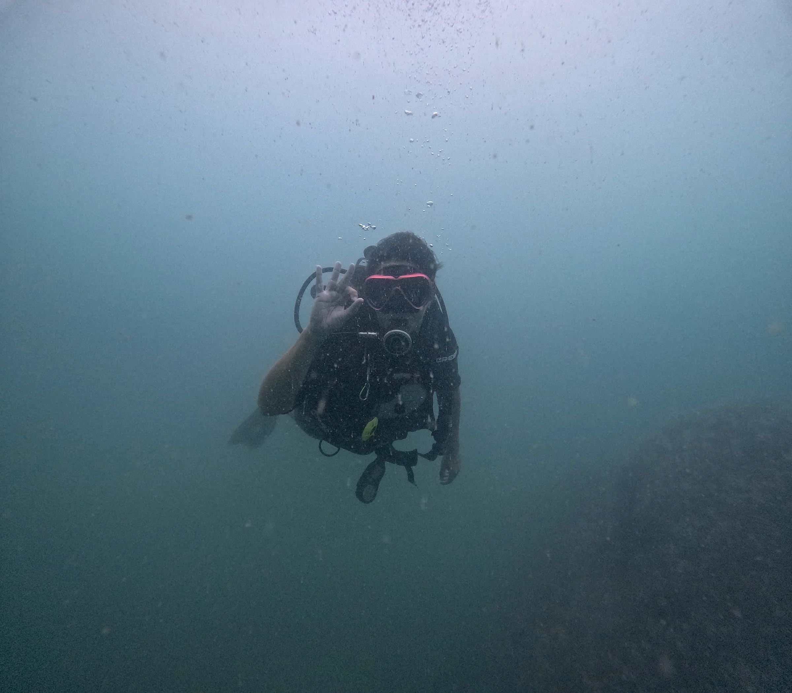
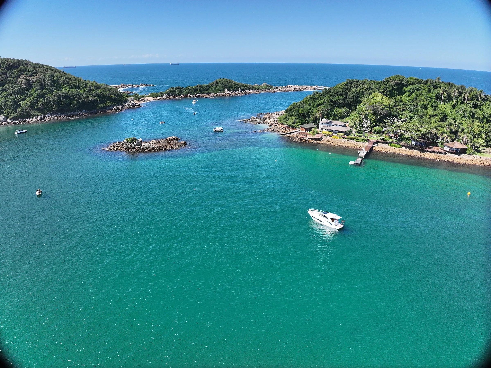
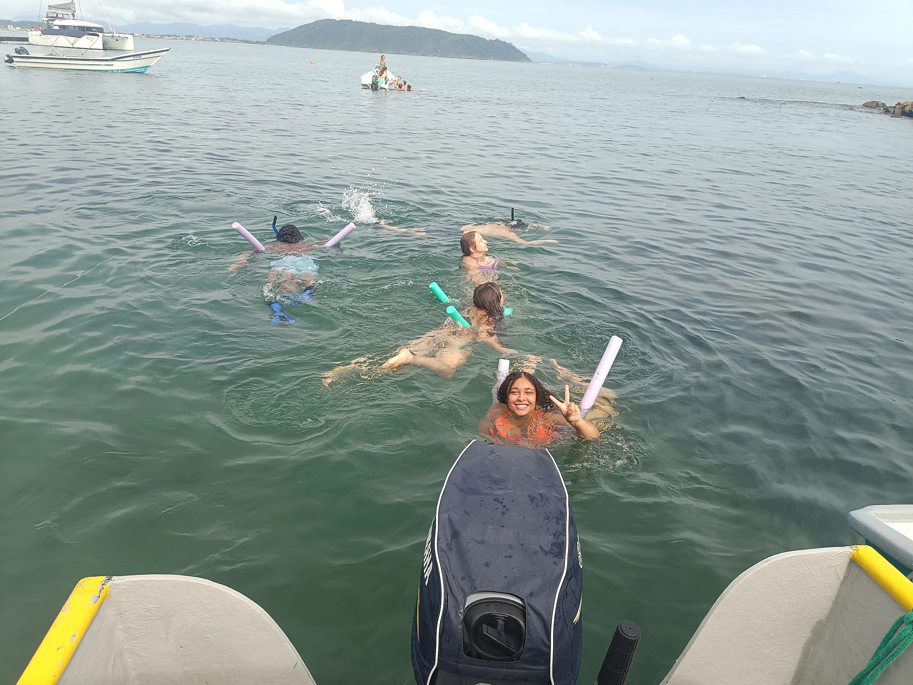
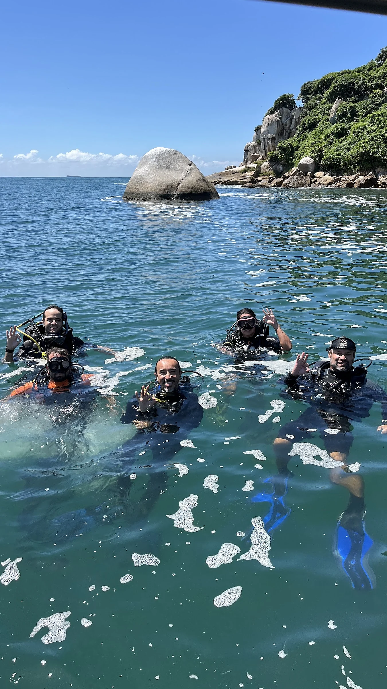
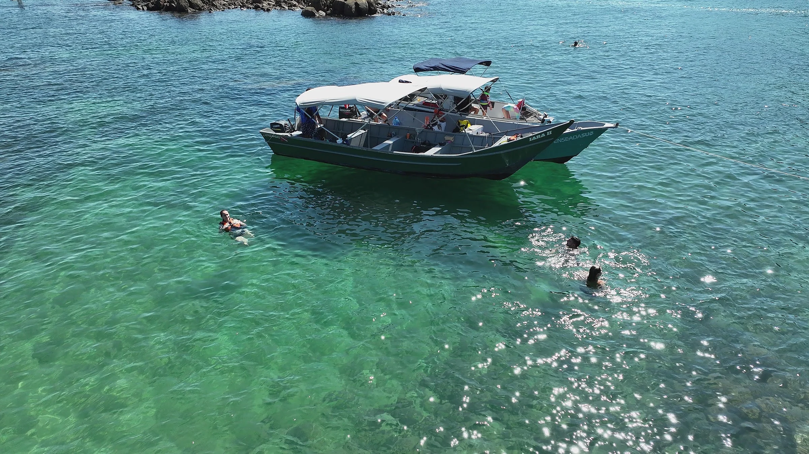
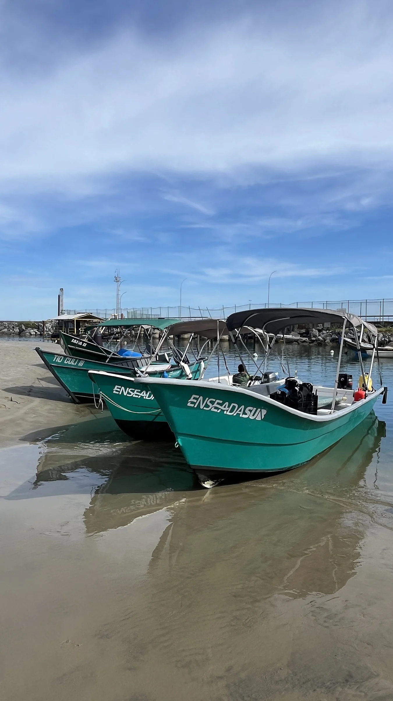
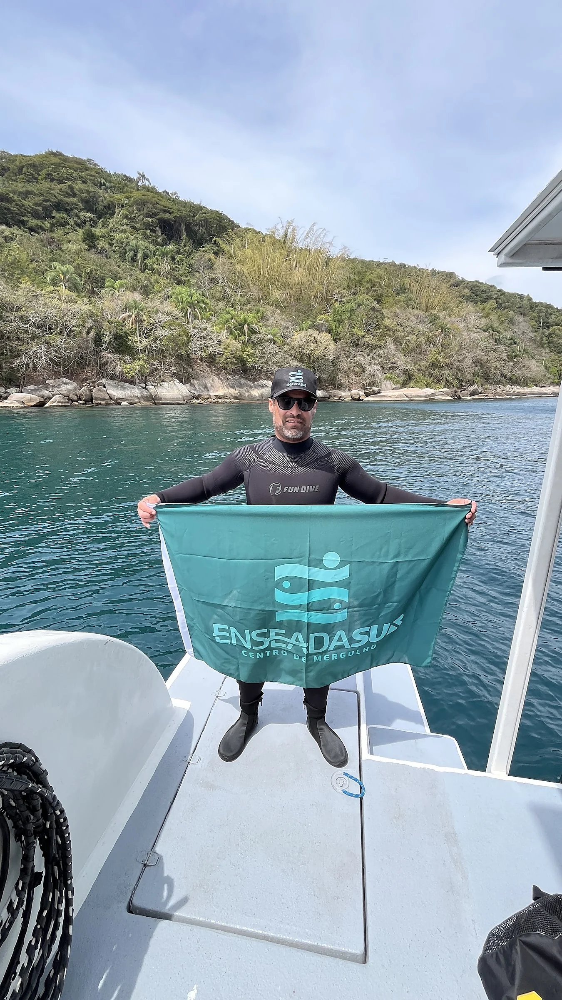
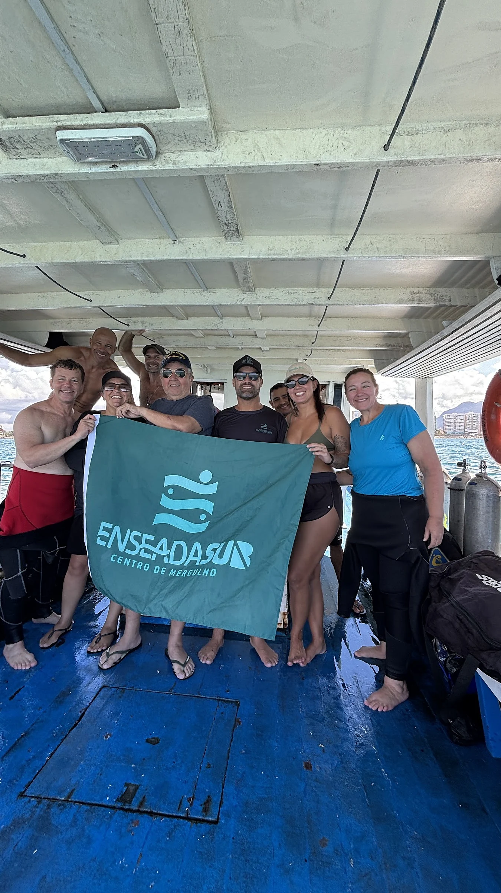

Try Scuba SSI
Batismo de Mergulho
Seu primeiro mergulho com cilindro lado a lado com instrutor. Não precisa saber nadar nem ter experiência.

Batismo de mergulho, snorkeling, cursos internacionais SSI e passeios de barco às ilhas com a equipe da Enseada Sub.
Saídas guiadas pela equipe do Everton com equipamentos revisados e embarcações próprias.

Seu primeiro mergulho com cilindro lado a lado com instrutor. Não precisa saber nadar nem ter experiência.

Banho de mar nas águas calmas das ilhas com máscara, snorkel, nadadeiras e flutuadores inclusos.

Do Open Water Diver ao avançado: teoria online, treino em piscina e check-out no mar de São Chico.

Travessia saindo da Praia da Enseada até as ilhas para contemplação, banho de mar ou mergulho credenciado.


Escolha de roupa de neoprene, máscara, colete e briefing claro com os instrutores antes de entrar na água.
Saída da Av. Atlântica em embarcações próprias com cobertura, coletes e marinheiros experientes.
Águas abrigadas nas ilhas, acompanhamento individual no batismo e tempo tranquilo para curtir o fundo do mar.

“Experiência única, inesquecível e indescritível. Só fazendo para saber o quanto é lindo o fundo do mar. Graças ao profissionalismo, carinho e cuidado do Everton e da equipe Enseada Sub.”
“Amei o passeio! Foi uma tarde deliciosa. As embarcações são novas, os marinheiros conduzem com muito cuidado e me senti extremamente segura o tempo todo.”
“Passeio excelente! Gentileza, cuidado e preocupação com as limitações individuais de cada um do grupo no barco. Quem for a São Francisco não pode deixar de fazer.”
Monte sua programação abaixo e envie direto para o WhatsApp da Enseada Sub.
Não. O batismo (Try Scuba) é feito justamente para iniciantes: você recebe todas as orientações antes e mergulha conduzido lado a lado pelo instrutor credenciado SSI.
O centro fica na Rua Papanduva, 47 (Praia Grande / Enseada) e o embarque dos barcos fica na Av. Atlântica, 22846, na Praia da Enseada.
Somos Centro Credenciado SSI. Ministramos desde o Open Water Diver (certificação internacional inicial) até especialidades, ecologia marinha e treinamentos avançados.
Sim. Nos batismos, cursos e flutuações fornecemos os equipamentos necessários, além de contarmos com locação e venda de equipamentos no centro.